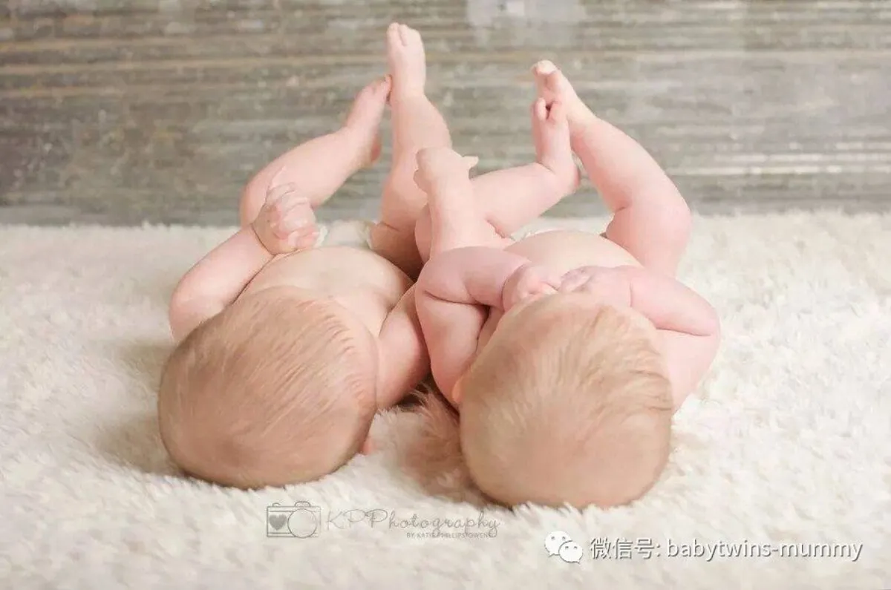

来这里找志同道合的小伙伴！
文|圆圈妈 图片|来自网络
参考文献：https://www.twiniversity.com
我的双胞胎儿子6个月了，昨天去体检，儿保医生说要让孩子睡整觉，不要喝夜奶了。我的天呐，医生简直是站着说话不腰疼。才6个月大的宝宝，一个孩子估计都比较困难，更何况是两个一样大的孩子。在同一个房间，这两个一起哭，或者一个哭肯定会把另一个吵醒的。家里又没有多余的房间让他们分开睡。这可怎么办呐？。
这种情况是不是似曾相识呢？
是的，我也曾经历过这种纠结的局面。
给双胞胎宝宝断夜奶，训练双胞胎宝宝睡整觉？
简直是天荒夜谈啊！
但不是不可能的！
育儿达人妈妈A：
训练双胞胎宝宝睡整觉，需要耐心和和坚持。我们家也是没有多余的房间让他们分开睡，而且觉得双胞胎宝宝睡在一起比较好。但频繁的起夜喂奶，真的让所有人都痛苦不堪。
在他们5个多月大的时候，我们就开始有计划地训练他们睡整觉了，我装了监控在他们的房间，这样我可以随时监测到他们的一举一动。
刚开始凌晨两点钟，每人喂一次奶。接着把时间调整到晚上10点钟，每人喂一次奶。要是半夜哭醒就再喂一次“奶”注意这个“奶”并不是真正的奶，而是被稀释过的奶。
比如3勺奶粉放3刻度的水，慢慢地变成2勺奶粉放3刻度的水，随着稀释的次数增加，最后不放奶粉，只是喂水。这个过程大概持续了5天。后面等他们觉察到原来喝的都是水，他们就不想再喝了。
此外，他们晚上的最后一顿喝奶，尽量多喂点，以拖延喂奶的时间。刚开始，他们半夜醒来了，理所当然集体哭嚎。我们隔5分钟就去安抚一次。接下来几天，隔10分钟去安抚下。在接着几天，隔15分钟去安抚下。
到了第七天，没有任何效果，他们依然哭，不过，不再是那张撕心裂肺的鬼哭狼嚎。我们觉得这已经很不容易了。
我们决定再狠心一个星期。起初，双胞胎哥俩会轮流起来哭，会互相吵醒对方，到了第三天，他们已经可以把彼此的哭声忽略不计了。到了第六天晚上，他们居然都没哭，直接睡整觉了。
简直是奇迹啊！
育儿达人妈妈B：
我们家的双胞胎姐妹两，从出生开始一直睡在同一张婴儿床上，到了5个月大的时候，才把她们放在同一个房间，分开两个小床睡，到了9个月大的时候，她们已经熟悉了彼此的哭声。因此也不存在一个哭会把另一个吵醒的情况。
她们哭的时候，也不完全是渴了，饿了，或者纯粹是无聊吧，第一个晚上她们哭了一个小时，第二个晚上哭了半个小时，第三个晚上，就没哭了！
有人说我很残忍，其实我也很玻璃心，听到孩子哭得那么凄凉，我心如刀割。但是我一人带娃，睡眠对我来说真的太重要。我不得不做出妥协！好在。我运气好，宝宝可能感觉到什么了。训练了三个晚上就初见成效了。
育儿达人妈妈C：
我们家的双胞胎姐弟，20个月才开始睡整觉，他们从晚上八点睡到早晨7点。期间偶尔会哼哼唧唧地醒来下，但只需要轻轻安抚下，比如拍拍肩膀，拍拍屁股就可以安抚好，并继续睡下。
我们没有刻意地去训练他们，相信每一个宝宝都有自己的天性，一切都是水到渠成。
育儿大人妈妈D:
让孩子睡整觉，无非就是断夜奶。我们那的儿保医生建议断夜奶的窗口期是4到6个月，否则越晚越难断。
实际上我们家的双胞胎兄妹，12个月才真正意义上地睡整觉。我们也很痛苦，每天晚上要被这两个小祖宗折磨个好几回合，可是没办法，我就是受不了他们那个撕心裂肺的哭嚎，宝爸让我狠狠心，但是去他大爷的“哭声免疫法”，我实在不忍心看着我娃哭成那样。
就这样断断续续地折腾到他们快1岁，他们起初一个晚上才醒来一两次，每次我想给他们喂奶，结果还没喝上几口就睡了。慢慢地到最后，他们从晚上8点半居然可以睡到早晨的六点钟了。 真让我受宠若惊。
育儿达人妈妈E：
断夜奶，睡整其实没啥窍门。关键还是看运气，这个运气取决于宝宝的情况。有些宝宝吃软，有些宝宝吃硬，有些宝宝软硬不吃。
我那一对儿子就是软硬不吃。从他们6个月开始，我就有意识地训练他们睡整觉了。我使出浑身解数，参考各种育儿经验，都不管用。哥俩同仇敌忾，要哭一起哭，还要分出个高低，谁能把妈妈哭醒谁就赢。
我试过了，哭的时候，都抱着安慰，或者狠心不抱，由着哭。但都没效果！该怎么醒的还是醒了，该怎么哭的还是哭了，一点改变都没有。我断定这两货就是上辈子欠他们的，存心来折磨我的！
后来索性就顺其自然了。到了2岁多，他们终于意识到自己太过分了，终于像个正常孩子一样，睡整觉了，阿弥陀佛，我感觉世界瞬间美好了！
圆圈妈的经验分享：
在这个断夜奶，睡整觉的问题上，我要非常感谢圆圈。他们在这个问题上并没有给我带来多大的困扰。以至于我已经记不清那会儿是怎么过来的了。
因为我的身体原因，圆圈没有喝过一口母乳！以至于每次我给他们看绘本，解释小牛犊在喝奶奶，他们总是唏嘘不已地问：
妈妈，小牛犊的奶瓶哪里去了呢？
同时又因为我得天独厚的运气，圆圈在前6个月里，都是他们的爷爷奶奶没日没夜地照顾着。反正我又不用喂奶，半夜又起不来，干脆就睡了。
可能圆圈也感觉到自己的亲妈太过分了，他们生更半夜醒来吵来的奶不是母乳也不是妈妈给喂的，自然就没有兴趣了。到了6个月左右，圆圈几乎可以从晚上八点半睡到早晨五点钟了。
总结了些经验给有需要的宝妈参考：
鉴于双胞胎宝宝的特殊性，一人哭会把另一人哭醒。有条件最好分房分床睡。
这样执行起可以轻松很多。如果不得不共用一个房间，那也没关系，办法总是有的。只是会曲折一点。要做好“一人哭肯定会把另一个哭醒”的心理准备，不过这是暂时的。
只要大人恰当处理，适当安慰，这种情况不会持续太久。宝宝会渐渐地熟悉彼此的哭声，并慢慢地适应。至于这个过程持续多久，都没个准。只能说看宝宝们的“造化”了。
跟家里人协商一致。
该走怎么的计划，提前跟家里人商量好，并确保意见一致。比如有些妈妈推崇“哭声免疫法”但是大多数的老人家可能接受不了。这就需要事先商量好，确定好方案就不要轻易更改，如果总是犹豫摇摆不定，大人孩子会更痛苦。
比如半夜孩子哭，是去抱还是不去抱呢？如果要抱，啥时候去抱呢？如果不抱，那大人可以忍受多久呢？这些细节的东西，都尽量提前地计划好，并达成一致。万不可因为中途某人的玻璃心而坏了大家的“好事”。
不要太早让孩子断夜奶。
有些家长过分担心夜奶会引起龋齿，不满三个月就开始琢磨着怎么断夜奶，睡整觉。儿保医生的建议，4个月以前的宝宝还有吃夜奶的生理需求，4个月以后的宝宝，只要白天和睡前吃得足够，从生理上已经不需要夜奶了。有时候宝宝喝夜奶紧紧是因为习惯了而已。
圆圈5个月大的时候，偶尔会哭醒，他们的奶奶以为是饿了就赶紧用最快的速度泡奶粉。才三五分钟的时间而已，居然又睡下去了。
就是从那以后，圆圈一哭，我们就不打算给他们喝奶了，如果非要沾下奶瓶，也顶多是喂水。真是无心插柳柳成荫，这样的情况持续了个把星期，圆圈就很少夜醒了。
适当安抚宝宝。
很多妈妈半途而废或者前功尽弃，就是被宝宝的鬼哭狼嚎给打败的。切记玻璃心啊，如果想要速战速决就得有快刀斩乱麻的样子。
这种情况，不妨学下这个网友的支招：
可以让他在房间里哭一会儿，采用2分钟，5分钟，10分钟间隔安抚的方式，这种方式对让宝宝自主入睡也非常有效，比如先让他自己在床上哭2分钟，进来安抚2分钟，但不要抱起来，可以哄哄，和他说话，然后出去，下一次隔5分钟再进来安抚2分钟，再下一次10分钟安抚2分钟，第一天也许宝宝哭的时间会很长，但一到两天之后，宝宝就能找到自我安抚的方法，相对快地入睡了，一般3到4天，宝宝就能自己睡着，不再需要夜奶了。
值得强调的是，这个人，除了孩子的亲妈，任何人都可以。因为有一个不成文的规定，孩子一碰到妈就会变得更加娇气。至于为什么，得问孩子们本人了。
带娃是件伟大而艰巨的使命，更何况是同时带两个只会吃哭睡的娃，各种育儿理论铺天盖地，看似都管用，都凑效，但是否适合自己孩子，这就见仁见智了。毕竟只有我们自己是最清楚孩子的，什么方式最好，并没有一个定论。总而言之，适合孩子的，才是最好的。
*作者简介：圆圈妈，家有孖仔男两枚，立志做一名合格的80后全职妈妈。
微信公众号ID：babytwins-mummy 孖仔帮
个人博客：三个男人（www.sgguy.com）
一个专注双胞胎群体的网站，面向家长，每天分享亲子养育知识
往期精彩回顾：
双胞胎与孕期体重----想说爱你不容易
双胞胎与孕期微量元素---对你爱爱爱不完
双胞胎与糖筛----一场明争暗斗的较量
曝光：我们对双胞胎的那些误解，你中招了吗
双胞胎哥俩亲历疱疹性咽颊炎，附护理经验
双胞胎与唐氏筛查---美丽的邂逅
双胞胎的“心灵感应”---同时生病
为什么有些同卵双胞胎越看越不像了
↓点击下方“阅读原文”查看更多
